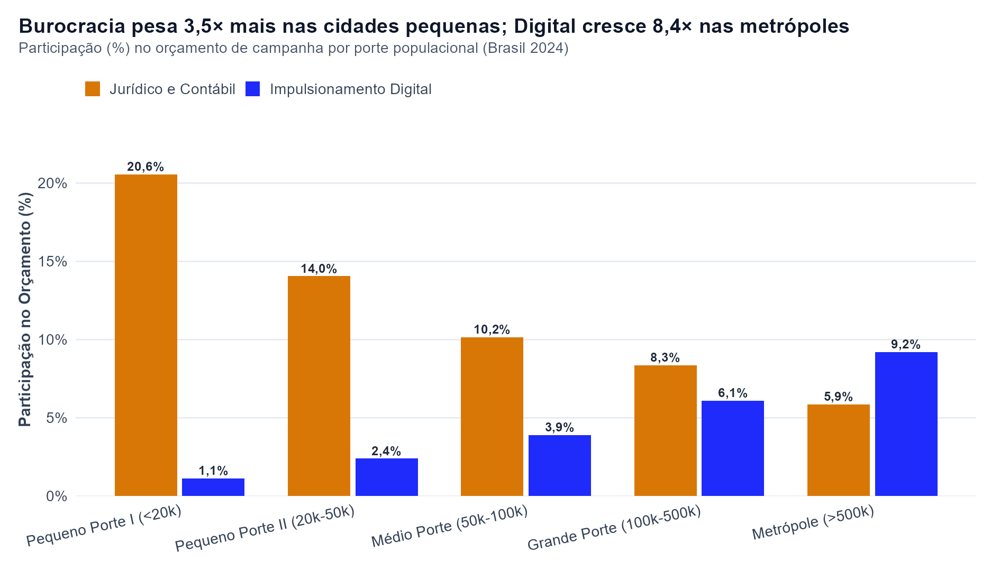

Jurídico + Contábil somam R$ 698,3M (2,02× todo o Digital) e funcionam como custo fixo regressivo nas pequenas cidades.

Nas cidades <20 mil hab., 1 em cada 5 reais vai para advogados e contadores — 3,5× mais que nas metrópoles.
Impulsionamento cresce monotonicamente com o porte urbano, enquanto Papel e Adesivos ainda lideram o interior.